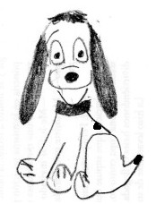

16/02/2011
Hojas de Estilo en Cascada (CSS), es un mecanismo simple que describe cómo se va a mostrar un documento en la pantalla, o cómo se va a imprimir, o incluso cómo va a ser pronunciada la información presente en ese documento a través de un dispositivo de lectura. Esta forma de descripción de estilos ofrece a los desarrolladores el control total sobre estilo y formato de sus documentos.
Formato: Estándar W3C